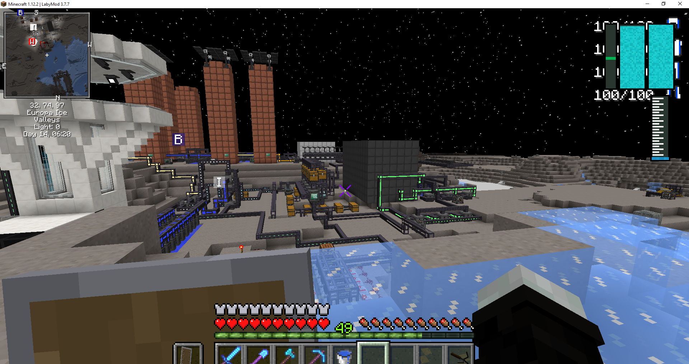

The variations of Minecraft's industrial mods
Introduction
Minecraft is one of the most popular games out there and is the most modded game in existance. With so many mods to choose from, which one should you start with? I've included a list of mods that work with the current version of Minecraft so you don't have to miss out on new features. These mods are focused on industrializing Minecraft, and I have included some of the most popular ones. This is not an exhaustive list by any means; however, this should give you a good starting point. I have included links to the mods so you can learn more about them.
Thermal Expansion
Expanding Minecraft Thermally! A server-friendly and content-rich blend of magic and technology! For nearly a decade, the Thermal Series mods have been a cornerstone of modded gameplay. They've pioneered gameplay innovations and optimizations used in practically every modern mod in existence.
The Forge Energy system was built from Redstone Flux, and many common modded features - side reconfiguration, advanced redstone control, blue/orange input coloring - all started with the Thermal Series.
The Thermal Series is a modular series of mods, allowing players, server owners, and modpack creators to easily choose the aspects which they want and those which they do not, allowing it to fit into a variety of gameplay styles and worlds.
As a set, the mods form a cohesive experience which greatly expands the Minecraft universe in a lore-friendly (but admittedly technological) way.
This module contains "Expansion" - the original mod in the series, going all the way back to Minecraft 1.2.5. It contains the "industrial base" of the Series, providing options for energy generation, storage, and resource processing!
The mods are still being updated regularly and the Series is not complete yet! We're working on it and appreciate your patience. Even so, there's a LOT of stuff for both newcomers and veterans. We hope you enjoy the new Thermal Series.
Information retrieved from https://www.curseforge.com/minecraft/mc-mods/thermal-expansion
Tech Reborn
Tech Reborn is a mod created by modmuss50, GigaBit101, ProspectorDev, yulife_curse, drcrazy777, Ourten, and Spearkiller.
It is a reimagining and recreation of the pre-Experimental version of IndustrialCraft 2 and GregTech 2. It adds many
new machines, which can use Forge Energy, Tesla, Redstone Flux, Energy Units, or Fabric Energy. The mod has a large
tech tree with many machines, utilities, tools, and components.
Information retrieved from https://ftb.fandom.com/wiki/Tech_Reborn
IndustrialCraft 2 Classic
IndustrialCraft Classic (IC2 Classic for Short) is an industrial based mod that adds the Industrial Revolution
to Minecraft, part of this is:
Electricity:
-Storing / Producing / Using Power to your advantage.
Ore Processing:
-Get effectively more Ingots out of your Ores.
More Tools:
-Making you a more efficient Person in: Mining, Foresting and building.
More Weapons/Armor:
-Making you a better fighter and let you protect yourself better.
Automation:
-Allow you to get resources and process Items better.
Power Production:
-Allowing you to produce Electricity and use that instead of relying on Solid Fuel
IC2 Classic also implements some IC2 Addons to itself, like Advanced Machines and Compact Solars, with others are planned.
On top of that, it tries to support as many addons as possible, but also native compat to other mods:
Like BuildCraft, NEI (Not Enough Items), Tinkers Construct, Waila and a lot of others.
Compared to IndustrialCraft Experimental, IndustrialCraft Classic is based around the Original Concept and tries to keep to that, whilst also being casual player friendly without losing its main features.
In the 1.10.2 Version the Mod basically doubled in size you get a lot of new things to play with.
But IC2Classic is not a mod that forces the focus on to itself.
Its a mod that asissts you with your minecraft expierence.
How much you want to touch in this mod is up to you.
That doesn't mean that you can't focus around the mod there is a lot to play and get lost with.
Information retrieved from https://www.curseforge.com/minecraft/mc-mods/ic2-classic
Applied Energistics 2
Applied Energistics 2 is a mod for Minecraft which contains a large amount of new content, mostly centered around the concept of using Energy, and the Transformation of Energy in a unique way. Most features relate, or are part of the core mechanic, the ME Network.
Applied Energistics 2 is available for both the Fabric and Forge modding platforms. Please see the downloads page for details.
Applied Energistics 2 - ME Networks provide:
Modular Robust automation tools and great support for working with other automation mods.
ME Import Bus
ME Export Bus
ME Level Emitter
ME Interface
Unique storage system using ME Drive, Storage Cells and ME Storage Buses.
ME P2P Tunnel to transmit signals, items, fluids and other concepts over common cables.
Less time wasted walking back to your chests when working in your base with the Wireless Terminal.
Hide your cables with Cable Facade and full support for Forge Multipart.
Lots of neat new decorative blocks like Sky Stone Block, Certus Quartz Pillar, Quartz Glass and Charged Quartz Fixture.
and so much more!
Information retrieved from https://appliedenergistics.github.io/
Create Mod
Welcome to Create, a mod offering a variety of tools and blocks for Building, Decoration and Aesthetic Automation.
The added elements of tech are designed to leave as many design choices to the player as possible. With Create, the game isn't played inside a bunch of UIs, it challenges you to setup contraptions of animated components working together in many possible arrangements.
Create's visual in-game documentation called 'Ponder' will guide you though all added mechanics and gadgets.
Important: In order to be able to see all recipes required in Create, consider installing JEI. The vanilla recipe book will not be able to guide you through the experience by itself.
Information retrieved from https://www.curseforge.com/minecraft/mc-mods/create
Beyond Earth
Beyond Earth is a technology and space exploration mod for modern versions of Minecraft. It allows you
to build rockets capable of space travel. You can explore multiple planets throughout the Solar System,
build oxygenated space stations and bases and survive in space. You've always wanted to visit other
planets, and now with Beyond Earth, you can fulfill your dreams of becoming an astronaut!
Information retrieved from https://www.curseforge.com/minecraft/mc-mods/beyond-earth
